คู่มือใช้งานเครื่องมือ · ระดับ Free
โปรแกรมคำนวณประสิทธิภาพหม้อไอน้ำ
Boiler Efficiency Calculator
FREE
สำหรับช่างเทคนิคที่เพิ่งเริ่มงาน — อ่านแล้วทำตามได้เอง
ใช้เวลาฝึกประมาณ 45 นาที
เคสตัวอย่าง: โรงงาน A หม้อไอน้ำเผาไม้ฟืน 10 ตัน/ชม. (ข้อมูลสมมุติเพื่อฝึก)
อ.หนึ่ง กลับทวี / Aj. Nueng Klubtavee
tripleeenergytools.com
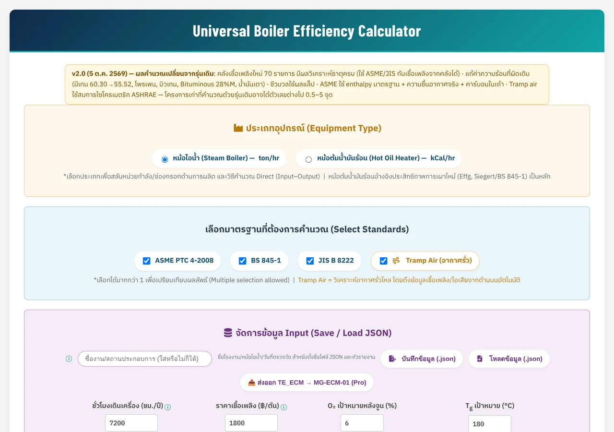
หน้าจอเครื่องมือ — เปิดได้จากเมนู Free ของเว็บไซต์
รุ่นเครื่องมือ: Free commit 191aab2 · จับภาพ 18 พ.ย. 2569 · คู่มือ Rev04
เครื่องมือนี้ตอบคำถามอะไร
คู่มือใช้งาน · โปรแกรมคำนวณประสิทธิภาพหม้อไอน้ำ (Boiler Efficiency Calculator) · ระดับ Free
2 / 26
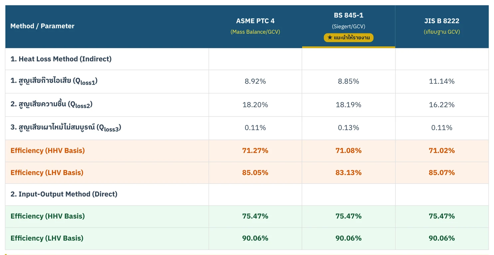
หม้อไอน้ำของเรามีประสิทธิภาพกี่ % — คำนวณได้ 2 วิธี: วิธีตรง (Direct) และวิธีอ้อม (Indirect)
ความร้อนหายไปทางไหนมากที่สุด — ไอเสียแห้ง / ความชื้น / เผาไหม้ไม่สมบูรณ์
เทียบผล 3 มาตรฐาน พร้อมกัน: ASME PTC 4 · BS 845-1 · JIS B 8222
มีอากาศรั่วเข้าห้องเผาไหม้ (Tramp Air) มากแค่ไหน
ส่งข้อมูลต่อไปประเมินมาตรการประหยัดพลังงาน — ไฟล์ TE_ECM นำเข้า MG-ECM-01 บัญชีมาตรการ (ระดับ Pro)
💡 เคล็ดลับ
ภาพขวาคือ "ผลลัพธ์" ที่จะได้เมื่อทำครบทุกขั้นในคู่มือนี้
แผนที่หน้าจอ: ทำงานจากบนลงล่าง
คู่มือใช้งาน · โปรแกรมคำนวณประสิทธิภาพหม้อไอน้ำ (Boiler Efficiency Calculator) · ระดับ Free
3 / 26
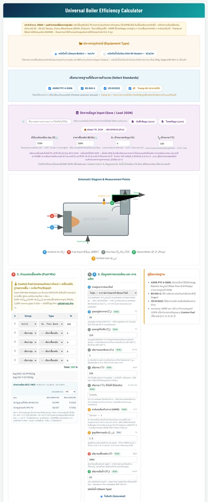
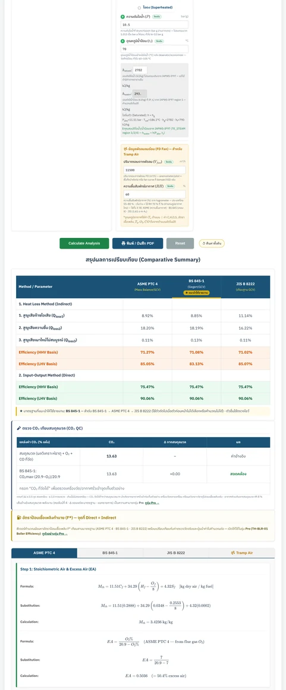
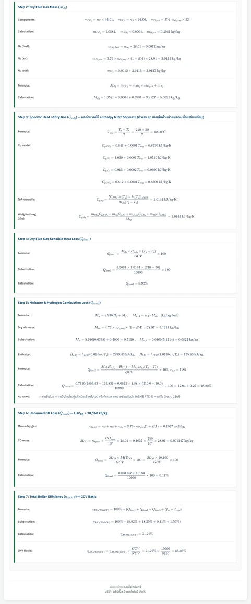
1
2
3
4
5
6
7
8
9
ส่วนต่าง ๆ ของหน้าจอ (เลื่อนจากบนลงล่าง)
1
ประเภทอุปกรณ์ — หม้อไอน้ำ / หม้อต้มน้ำมันร้อน
2
เลือกมาตรฐานที่ต้องการคำนวณ
3
บันทึก / โหลดไฟล์ · ส่งออก TE_ECM → MG-ECM-01
4
แผนผังจุดตรวจวัด A–E
5
เชื้อเพลิง (ผสมได้ 5 ชนิด)
6
ข้อมูลตรวจวัด: ไอเสีย · เชื้อเพลิง · ไอน้ำ · พัดลม
7
ปุ่มคำนวณ
8
ตารางสรุปผล
9
แท็บขั้นตอนคำนวณ + Tramp Air
ภาพหน้าจอทั้งหน้า ตัดเป็น 3 ช่วง อ่านจากซ้ายไปขวา
💡 เคล็ดลับ
หน้าเดียวยาวทั้งหน้า — เลื่อนลงไปเรื่อย ๆ ตามเลข ① → ⑨
เปิดบนมือถือ และสลับภาษา
คู่มือใช้งาน · โปรแกรมคำนวณประสิทธิภาพหม้อไอน้ำ (Boiler Efficiency Calculator) · ระดับ Free
4 / 26
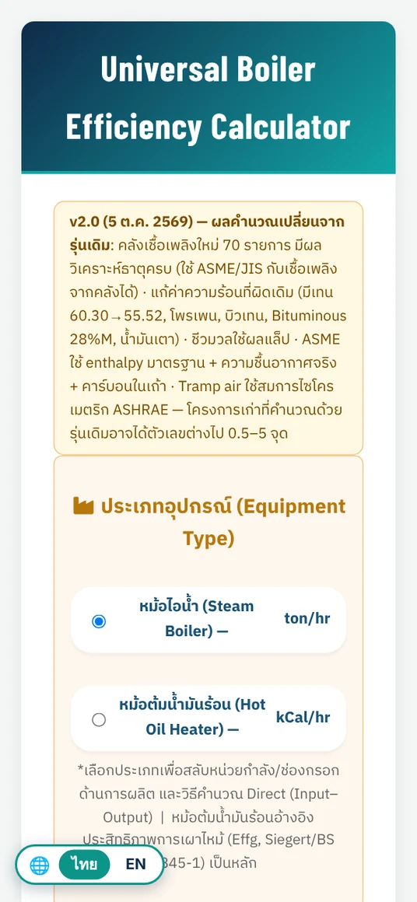
ใช้บนมือถือหน้างานได้ — หน้าจอจะเรียงเป็นคอลัมน์เดียว ลำดับเหมือนบนคอมพิวเตอร์
ปุ่ม 🌐 ไทย | EN ลอยอยู่ด้านล่างของจอ กดสลับภาษาได้ทุกเมื่อ ค่าที่กรอกไว้ไม่หาย
บนคอมพิวเตอร์จะเห็นช่องกรอกเป็น 2–3 คอลัมน์ อ่านง่ายกว่า — แนะนำกรอกข้อมูลจริงบนคอมพิวเตอร์
ช่องกรอกทุกช่องมีคำอธิบายสีเทาใต้ช่อง บอกจุดวัดและช่วงค่าปกติ — อ่านก่อนกรอกทุกครั้ง
💡 เคล็ดลับ
จดค่าหน้างานลงแบบฟอร์ม (สไลด์ 6) ก่อน แล้วค่อยมานั่งกรอก จะผิดน้อยกว่า
จุดตรวจวัด A–E บนหม้อไอน้ำ
คู่มือใช้งาน · โปรแกรมคำนวณประสิทธิภาพหม้อไอน้ำ (Boiler Efficiency Calculator) · ระดับ Free
5 / 26
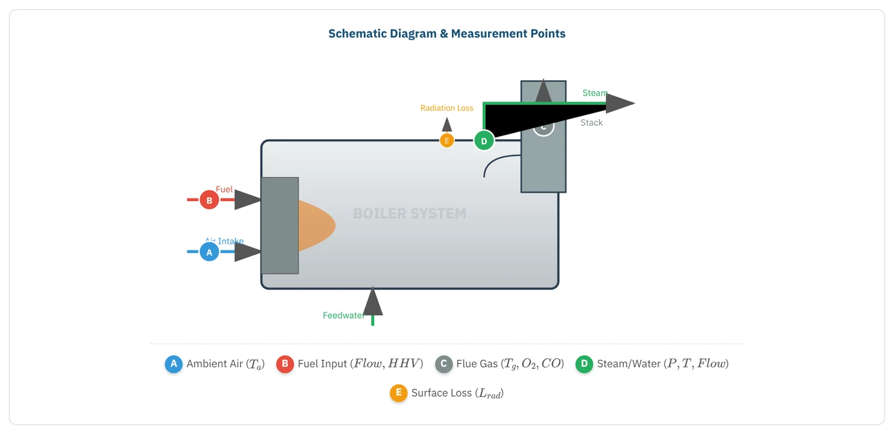
A
อากาศเข้า — วัดอุณหภูมิอากาศ Ta ที่ปากดูดพัดลม FD
B
เชื้อเพลิง — ชนิดเชื้อเพลิง และอัตราป้อน (kg/h)
C
ไอเสียที่ปล่อง — Tg, O₂, CO วัดหลังอุปกรณ์แลกเปลี่ยนความร้อนตัวสุดท้าย
D
ไอน้ำ/น้ำป้อน — อัตราไอน้ำ ความดัน อุณหภูมิน้ำป้อน
E
ผิวหม้อไอน้ำ — ความร้อนสูญเสียทางผนัง (ใช้ค่าประมาณได้)
💡 เคล็ดลับ
ตัวอักษร A–E นี้ จะเห็นอีกครั้งเป็นวงกลมสีหน้าชื่อช่องกรอก — ช่วยจำว่าค่านั้นวัดที่ไหน
เตรียมข้อมูลก่อนลงหน้างาน (แบบฟอร์มจดค่า)
คู่มือใช้งาน · โปรแกรมคำนวณประสิทธิภาพหม้อไอน้ำ (Boiler Efficiency Calculator) · ระดับ Free
6 / 26
| จุด | ข้อมูลที่ต้องจด | เครื่องมือวัด / แหล่งข้อมูล | ค่าเคส A |
|---|---|---|---|
| A | อุณหภูมิอากาศ Ta (°C) | เทอร์โมมิเตอร์ ที่ปากดูดพัดลม FD | 30 |
| C | อุณหภูมิไอเสีย Tg (°C) | หัววัดของเครื่องวิเคราะห์ก๊าซ ที่ปล่อง | 210 |
| C | O₂ ในไอเสีย (% แห้ง) | เครื่องวิเคราะห์ก๊าซ จุดเดียวกับ Tg | 7 |
| C | CO ในไอเสีย (ppm) | เครื่องวิเคราะห์ก๊าซ | 250 |
| B | ชนิดเชื้อเพลิง | ใบส่งของ / ผลวิเคราะห์ความชื้น | ไม้ฟืน ชื้น 40 % |
| B | อัตราป้อนเชื้อเพลิง (kg/h) | ตาชั่งสายพาน หรือ น้ำหนักชั่งรถ ÷ ชั่วโมงเดินเครื่อง | 3,000 |
| D | อัตราผลิตไอน้ำ (ton/h) | มิเตอร์ไอน้ำ / DCS หรือ น้ำป้อน − โบลว์ดาวน์ | 10 |
| D | ความดันไอน้ำ (bar g) | เกจความดันที่หม้อไอน้ำ (อ่านตามเกจ) | 10.5 |
| D | อุณหภูมิน้ำป้อน (°C) | เทอร์โมมิเตอร์ ท่อน้ำป้อนเข้าหม้อไอน้ำ | 70 |
| A | ปริมาตรลมพัดลม FD (m³/h) | แอนนิโมมิเตอร์/พิโทต์ × พื้นที่หน้าตัดท่อ | 11,500 |
| A | ความชื้นสัมพัทธ์อากาศ (%) | ไฮโกรมิเตอร์ | 60 |
⚠️ ระวัง
จดค่าในช่วงที่หม้อไอน้ำเดินโหลดคงที่ — Tg, O₂, ไอน้ำ และเชื้อเพลิงต้องเป็นช่วงเวลาเดียวกัน
ขั้นที่ 1
เลือกประเภทอุปกรณ์ และมาตรฐาน
คู่มือใช้งาน · โปรแกรมคำนวณประสิทธิภาพหม้อไอน้ำ (Boiler Efficiency Calculator) · ระดับ Free
7 / 26
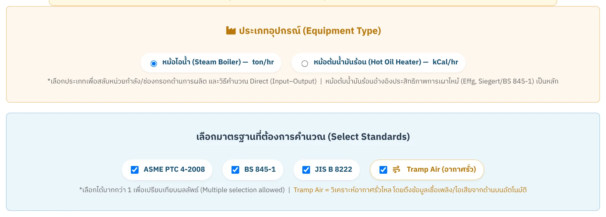
1
2
3
4
1
หม้อไอน้ำ (Steam Boiler) — หน่วย ton/hr ← เคส A เลือกอันนี้
2
หม้อต้มน้ำมันร้อน (Hot Oil Heater) — หน่วย kCal/hr
3
ติ๊กมาตรฐาน — เลือกได้หลายอัน แนะนำติ๊กทั้ง 3 เพื่อเทียบผล
4
Tramp Air — วิเคราะห์อากาศรั่ว (ต้องกรอกข้อมูลพัดลม FD ในขั้นที่ 6)
ขั้นที่ 2
เลือกเชื้อเพลิง
คู่มือใช้งาน · โปรแกรมคำนวณประสิทธิภาพหม้อไอน้ำ (Boiler Efficiency Calculator) · ระดับ Free
8 / 26
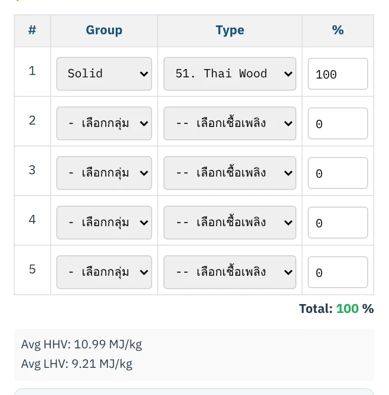
1
2
3
4
1
เลือกกลุ่ม: Solid (ของแข็ง) / Liquid (น้ำมัน) / Gas (ก๊าซ)
2
เลือกชนิด: 51. Thai Wood (40%M) = ไม้ฟืนไทย ชื้น 40 %
3
สัดส่วน % — เชื้อเพลิงชนิดเดียวใส่ 100
4
โปรแกรมคำนวณค่าความร้อนให้: HHV 10.99 · LHV 9.21 MJ/kg
เผาหลายชนิดพร้อมกัน → ใช้แถว 2–5 แล้วใส่สัดส่วนโดยน้ำหนัก ให้ Total = 100 %
ไม้ฟืนมีให้เลือกตามความชื้น 4–48 % — เลือกให้ตรงความชื้นจริง เพราะมีผลกับผลลัพธ์มากที่สุด
⚠️ ระวัง
Total ไม่ถึง 100 % = ผลคำนวณผิด ตรวจตัวเลขสีเขียวมุมขวาล่างทุกครั้ง
ขั้นที่ 3
กรอกข้อมูลไอเสียและอากาศ
คู่มือใช้งาน · โปรแกรมคำนวณประสิทธิภาพหม้อไอน้ำ (Boiler Efficiency Calculator) · ระดับ Free
9 / 26
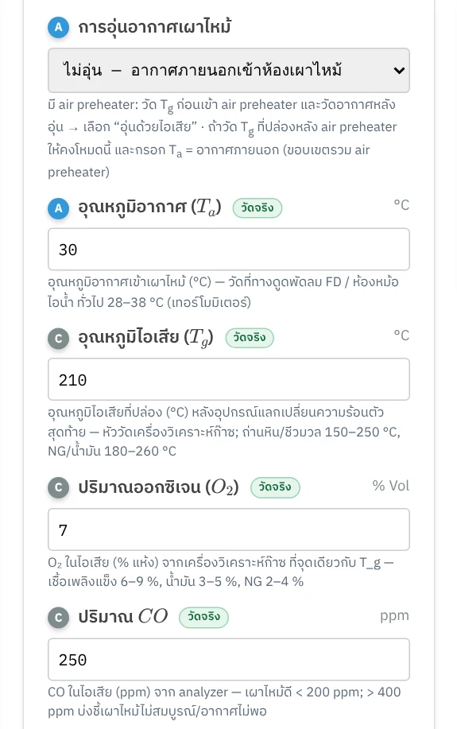
1
2
3
4
5
1
Ta อุณหภูมิอากาศ = 30 °C (ปกติ 28–38 °C)
2
Tg อุณหภูมิไอเสีย = 210 °C (ชีวมวล 150–250 °C, น้ำมัน/NG 180–260 °C)
3
O₂ = 7 % (เชื้อเพลิงแข็ง 6–9 %, น้ำมัน 3–5 %, NG 2–4 %)
4
CO = 250 ppm (ต่ำกว่า 200 ppm = ดี, เกิน 400 ppm = เผาไหม้ไม่สมบูรณ์)
5
การอุ่นอากาศเผาไหม้ = "ไม่อุ่น" (เคส A) — มี air preheater ดูสองสไลด์ถัดไป
💡 เคล็ดลับ
ป้าย "วัดจริง" สีเขียวข้างชื่อช่อง = ต้องได้จากการวัดหน้างาน ห้ามเดา
ขั้นที่ 3ข
หม้อไอน้ำที่อุ่นอากาศด้วยไอเสีย (air preheater)
คู่มือใช้งาน · โปรแกรมคำนวณประสิทธิภาพหม้อไอน้ำ (Boiler Efficiency Calculator) · ระดับ Free
10 / 26
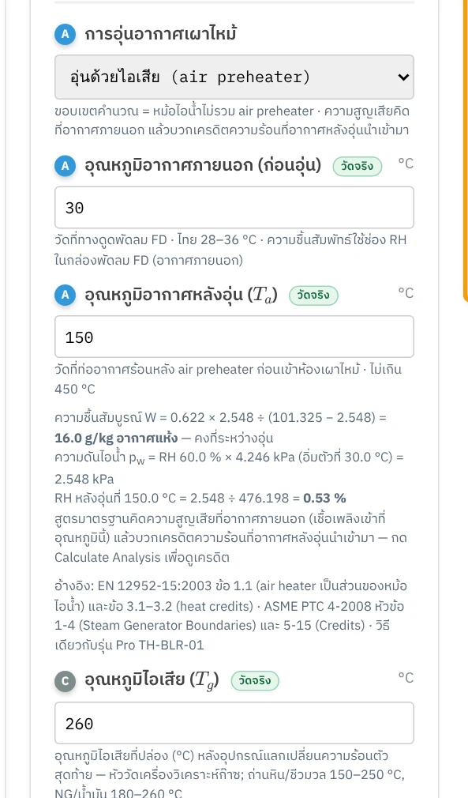
1
2
3
4
5
1
การอุ่นอากาศเผาไหม้ → เลือก "อุ่นด้วยไอเสีย (air preheater)"
2
อุณหภูมิอากาศภายนอก (ก่อนอุ่น) = 30 °C วัดที่ทางดูดพัดลม FD · RH ของอากาศภายนอกกรอกในกล่องพัดลม FD (60 %)
3
อุณหภูมิอากาศหลังอุ่น Ta = 150 °C วัดที่ท่ออากาศร้อนก่อนเข้าห้องเผาไหม้ (ไม่เกิน 450 °C)
4
เครื่องมือคำนวณให้: ความชื้นสัมบูรณ์ 16.0 g/kg อากาศแห้ง (คงที่ระหว่างอุ่น) · RH หลังอุ่น 0.53 %
5
Tg = 260 °C วัดที่ไอเสียก่อนเข้า air preheater
ความสูญเสียทุกข้อคิดที่อากาศภายนอก (เชื้อเพลิงเข้าที่อุณหภูมินี้) แล้วบวก เครดิตอุ่นอากาศ = ความร้อนที่อากาศหลังอุ่นนำเข้ามา
ขอบเขตคำนวณ = หม้อไอน้ำไม่รวม air preheater — Tg กับอากาศหลังอุ่นจึงต้องวัดที่ขอบเขตเดียวกัน
⚠️ ระวัง
วัด Tg ที่ปล่องหลัง air preheater? → คงโหมด "ไม่อุ่น" แล้วกรอก Ta = อากาศภายนอก (ขอบเขตรวม air preheater) · อย่าใส่อากาศร้อนเป็น Ta ในโหมด "ไม่อุ่น" — เกิน 60 °C เครื่องมือเตือน เกิน 200 °C หรือ RH เป็นไปไม่ได้ เครื่องมือไม่คำนวณ
เครดิตอุ่นอากาศในตารางสรุปผล
คู่มือใช้งาน · โปรแกรมคำนวณประสิทธิภาพหม้อไอน้ำ (Boiler Efficiency Calculator) · ระดับ Free
11 / 26
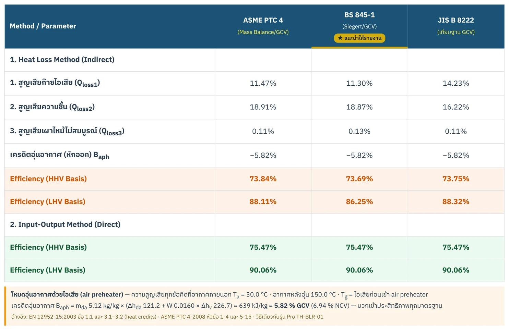
1
2
1
แถว เครดิตอุ่นอากาศ (หักออก) = −5.82% เท่ากันทุกมาตรฐาน (ฐาน GCV)
2
กล่องสรุป: อากาศแห้ง 5.12 kg ต่อ kg เชื้อเพลิง × (Δh อากาศแห้ง + W × Δh ไอน้ำ) = 639 kJ/kg = 5.82% GCV (6.94% NCV) พร้อมที่มา
ผล (HHV): ASME 73.84% · BS 845-1 73.69% · JIS 73.75% — ถ้าไม่รวมเครดิต BS 845-1 จะได้ 67.87%
แท็บขั้นตอนคำนวณ (ASME / BS / JIS) มี ขั้น 0: เครดิตอุ่นอากาศ แสดงสูตรและการแทนค่า และสูตร η ทุกแท็บมี + B_aph
วิธีตรง (Direct) ไม่เปลี่ยน = 75.47% เพราะคิดจากไอน้ำ ÷ เชื้อเพลิง
★ รุ่น Pro
วิธีคิดเดียวกับรุ่น Pro (TH-BLR-01 / TH-BLR-02) — อ้างอิง EN 12952-15:2003 ข้อ 1.1 และ 3.1–3.2 (heat credits) · ASME PTC 4-2008 หัวข้อ 1-4 และ 5-15
ขั้นที่ 4
กรอกเชื้อเพลิงที่ป้อน และความร้อนสูญเสียทางผนัง
คู่มือใช้งาน · โปรแกรมคำนวณประสิทธิภาพหม้อไอน้ำ (Boiler Efficiency Calculator) · ระดับ Free
12 / 26
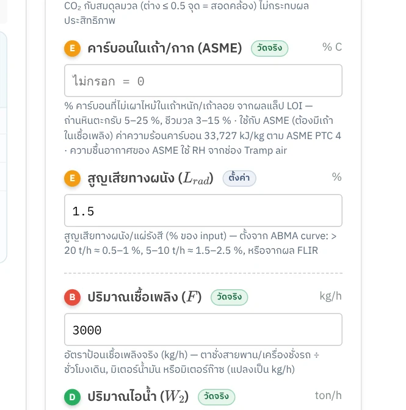
1
2
3
1
คาร์บอนในเถ้า/กาก — ไม่มีผลวิเคราะห์ ปล่อยว่าง (= 0)
2
สูญเสียทางผนัง = 1.5 % (หม้อไอน้ำ 5–10 t/h ประมาณ 1.5–2.5 %)
3
อัตราป้อนเชื้อเพลิง = 3,000 kg/h ← ค่าสำคัญที่สุดของวิธี Direct
⚠️ ระวัง
หน่วยคือ kg/h ไม่ใช่ ตัน/ชม. — ถ้าตาชั่งได้ 72 ตัน/วัน เดิน 24 ชม. = 72,000 ÷ 24 = 3,000 kg/h
ขั้นที่ 5
กรอกข้อมูลไอน้ำ
คู่มือใช้งาน · โปรแกรมคำนวณประสิทธิภาพหม้อไอน้ำ (Boiler Efficiency Calculator) · ระดับ Free
13 / 26
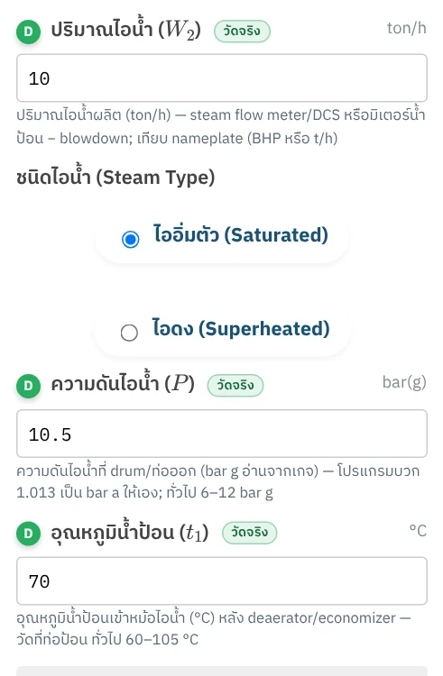
1
2
3
4
1
อัตราผลิตไอน้ำ = 10 ton/h
2
ชนิดไอน้ำ: ไออิ่มตัว (Saturated) — หม้อไอน้ำโรงงานทั่วไป
3
ความดัน = 10.5 bar g อ่านจากเกจตรง ๆ (โปรแกรมบวก 1.013 ให้เอง)
4
อุณหภูมิน้ำป้อน = 70 °C (ปกติ 60–105 °C)
ใต้ช่องเหล่านี้มีกล่องสีเทา เอนทัลปีไอน้ำ/น้ำป้อน — โปรแกรมคำนวณให้อัตโนมัติ ไม่ต้องแก้
💡 เคล็ดลับ
ถ้าเป็นไอดง (Superheated) จะมีช่องอุณหภูมิไอน้ำเพิ่มขึ้นมา
ขั้นที่ 6
กรอกข้อมูลพัดลม FD (สำหรับ Tramp Air)
คู่มือใช้งาน · โปรแกรมคำนวณประสิทธิภาพหม้อไอน้ำ (Boiler Efficiency Calculator) · ระดับ Free
14 / 26
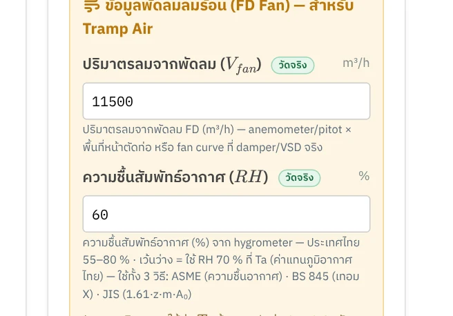
1
2
1
ปริมาตรลมจากพัดลม = 11,500 m³/h — วัดความเร็วลม × พื้นที่หน้าตัดท่อ
2
ความชื้นสัมพัทธ์อากาศ = 60 % (ประเทศไทย 55–80 %)
อุณหภูมิอากาศ, ส่วนผสมเชื้อเพลิง, Tg, O₂, CO ดึงจากช่องด้านบนให้อัตโนมัติ ไม่ต้องกรอกซ้ำ
ไม่มีเครื่องวัดลม → ไม่ติ๊ก Tramp Air ในขั้นที่ 1 ก็ได้ ผลประสิทธิภาพหลักยังคำนวณได้ครบ
ขั้นที่ 7
กดคำนวณ
คู่มือใช้งาน · โปรแกรมคำนวณประสิทธิภาพหม้อไอน้ำ (Boiler Efficiency Calculator) · ระดับ Free
15 / 26
1
2
3
1
Calculate Analysis — กดทุกครั้งหลังกรอกหรือแก้ค่า
2
พิมพ์ / บันทึก PDF — เก็บผลเป็นรายงาน
3
Reset — ล้างค่าทั้งหมดกลับเป็นค่าเริ่มต้น (ระวังกดพลาด)
กดแล้วเลื่อนลง จะเห็นตารางสรุปผล (สไลด์ถัดไป) และแท็บขั้นตอนคำนวณ
ผลดูผิดปกติ → ย้อนดูว่ามีช่องจำเป็นที่ยังว่าง หรือสัดส่วนเชื้อเพลิงไม่ครบ 100 %
⚠️ ระวัง
ก่อนกด Reset ควรบันทึกไฟล์ข้อมูลไว้ก่อน (ดูสไลด์ 21)
ขั้นที่ 8
อ่านตารางสรุปผล
คู่มือใช้งาน · โปรแกรมคำนวณประสิทธิภาพหม้อไอน้ำ (Boiler Efficiency Calculator) · ระดับ Free
16 / 26
1
2
3
4
5
1
สูญเสียไอเสียแห้ง (ASME) = 8.92%
2
สูญเสียความชื้น = 18.20% ← มากที่สุด เพราะไม้ชื้น 40 %
3
ประสิทธิภาพวิธีอ้อม (HHV): ASME 71.27% · BS 71.08% · JIS 71.02%
4
แบบ LHV = 85.05% (ตัวเลขสูงกว่า เพราะไม่นับความร้อนแฝงของไอน้ำในไอเสีย)
5
ประสิทธิภาพวิธีตรง (HHV) = 75.47%
💡 เคล็ดลับ
คอลัมน์ BS 845-1 มีป้าย "★ แนะนำให้รายงาน" — รายงานทางการให้ใช้ค่า HHV และระบุมาตรฐานทุกครั้ง เช่น "71.08% (BS 845-1, HHV)"
ทำไม Direct กับ Indirect ไม่เท่ากัน
คู่มือใช้งาน · โปรแกรมคำนวณประสิทธิภาพหม้อไอน้ำ (Boiler Efficiency Calculator) · ระดับ Free
17 / 26
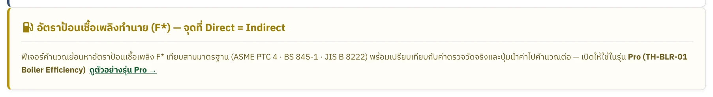
เคส A: Direct = 75.47% แต่ Indirect (ASME) = 71.27% — ต่างกันเกิน 4 จุด
วิธี Direct ขึ้นกับอัตราป้อนเชื้อเพลิงโดยตรง ซึ่งชีวมวลวัดให้แม่นได้ยาก
ลองแก้เชื้อเพลิงจาก 3,000 → 2,850 kg/h (คลาดไป 5 %) Direct กระโดดเป็น 79.45% แต่ Indirect ยังเท่าเดิม
สรุป: ถ้าสองค่าห่างกันมาก ให้สงสัยค่าเชื้อเพลิงก่อน แล้วเชื่อค่า Indirect มากกว่า
★ รุ่น Pro
รุ่น Pro (TH-BLR-01) คำนวณย้อน "อัตราป้อนเชื้อเพลิงทำนาย F*" ที่ทำให้สองวิธีเท่ากันให้อัตโนมัติ
ดูขั้นตอนคำนวณทีละสมการ
คู่มือใช้งาน · โปรแกรมคำนวณประสิทธิภาพหม้อไอน้ำ (Boiler Efficiency Calculator) · ระดับ Free
18 / 26
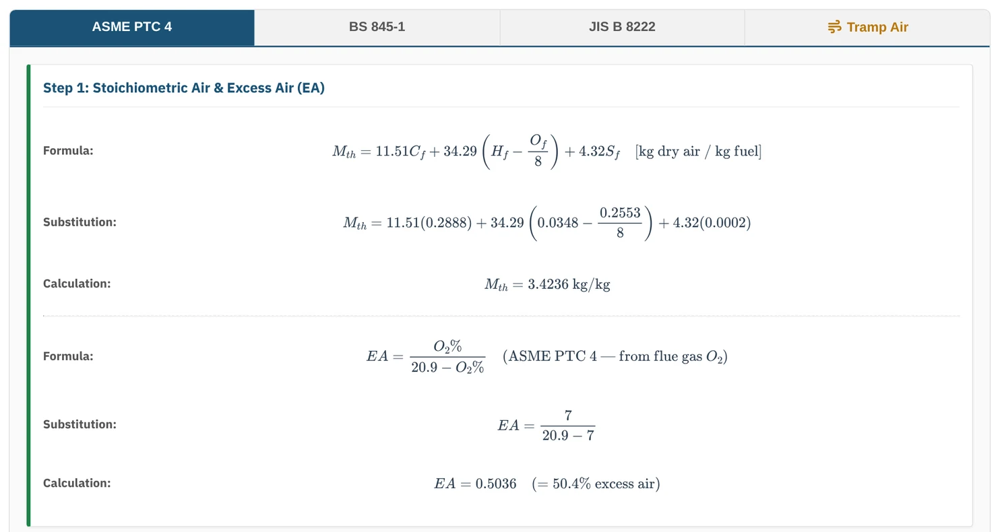
1
2
3
4
1
แท็บ ASME PTC 4 — สูตร → แทนค่า → ผลลัพธ์
2
แท็บ BS 845-1 (วิธี Siegert)
3
แท็บ JIS B 8222
4
แท็บ Tramp Air — อากาศรั่ว (สไลด์ถัดไป)
ตัวอย่าง: O₂ = 7 % → อากาศส่วนเกิน EA = 7 ÷ (20.9 − 7) = 50.36 %
ใช้ตรวจว่ากรอกค่าถูกไหม และใช้อธิบายผลให้หัวหน้า/ลูกค้าฟัง
แท็บ Tramp Air: อากาศรั่วเข้าหม้อไอน้ำ
คู่มือใช้งาน · โปรแกรมคำนวณประสิทธิภาพหม้อไอน้ำ (Boiler Efficiency Calculator) · ระดับ Free
19 / 26
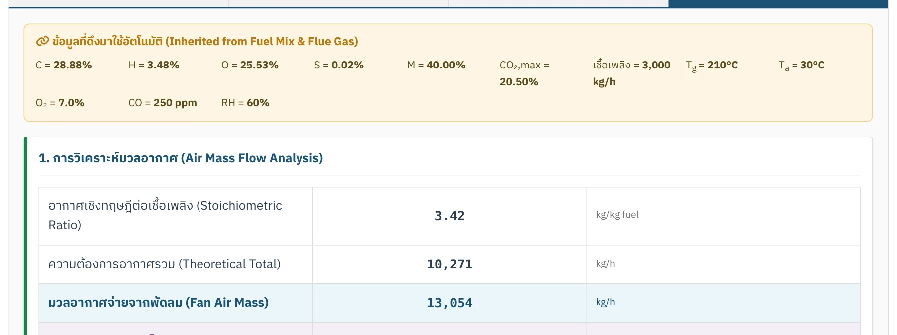
อากาศที่พัดลมส่งให้ น้อยกว่าอากาศที่คำนวณได้จาก O₂ ในไอเสีย → ส่วนต่างคืออากาศรั่ว
เคส A: อากาศรั่ว 2,390 kg/h (15.5 %)
อากาศส่วนเกินจริง 50.36 % — ส่วนหนึ่งมาจากการรั่ว ไม่ใช่จากพัดลม
ตารางถัดไปในแท็บนี้บอก: แก้การปรับพัดลมได้ประมาณ 1.59 % และอุดรอยรั่วได้ประมาณ 1.37 %
💡 เคล็ดลับ
จุดรั่วที่พบบ่อย: ประตูเตา ช่องดูไฟ ช่องเติมเชื้อเพลิง รอยต่อท่อไอเสีย
ลองเปลี่ยนค่า (What-if) — อะไรช่วยเพิ่มประสิทธิภาพได้
คู่มือใช้งาน · โปรแกรมคำนวณประสิทธิภาพหม้อไอน้ำ (Boiler Efficiency Calculator) · ระดับ Free
20 / 26
| ลองเปลี่ยน | ความสูญเสียที่เปลี่ยน | Indirect ASME (HHV) | Direct (HHV) |
|---|---|---|---|
| เคสหลัก A | ไอเสียแห้ง 8.92% · ความชื้น 18.20% | 71.27% | 75.47% |
| ปรับลมเผาไหม้ O₂ 7 → 5 % | ไอเสียแห้ง → 7.85% | 72.39% | 75.47% |
| ลดอุณหภูมิไอเสีย 210 → 170 °C | ไอเสียแห้ง → 6.91% | 73.85% | 75.47% |
| ใช้ไม้แห้งขึ้น ชื้น 40 → 28 % (ป้อน 2,400 kg/h) | ความชื้น → 13.97% | 75.50% | 78.25% |
| ตาชั่งเชื้อเพลิงอ่านต่ำไป 5 % (2,850 kg/h) | ไม่เปลี่ยน | 71.27% | 79.45% ⚠ |
ทำเอง: แก้ค่าในช่อง → กด Calculate Analysis → จดผล → แก้กลับเป็นค่าเดิม
เคส A ได้ผลมากสุดจากลดความชื้นเชื้อเพลิง (เก็บไม้ใต้หลังคา/ตากก่อนใช้)
Direct ไม่เปลี่ยนตาม O₂ หรือ Tg เพราะคิดจากไอน้ำ ÷ เชื้อเพลิงเท่านั้น
บันทึก / โหลดข้อมูล และส่งไปประเมินมาตรการ
คู่มือใช้งาน · โปรแกรมคำนวณประสิทธิภาพหม้อไอน้ำ (Boiler Efficiency Calculator) · ระดับ Free
21 / 26
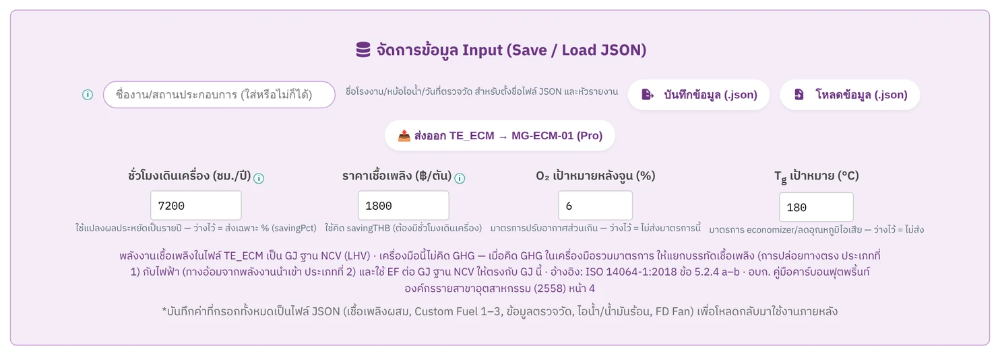
1
2
3
4
5
6
7
8
1
ตั้งชื่องาน เช่น "โรงงาน A หม้อไอน้ำ 1 ตรวจ 8 พ.ย."
2
บันทึกข้อมูล (.json) — เก็บค่าที่กรอกทั้งหมดไว้ในเครื่อง
3
โหลดข้อมูล (.json) — เปิดไฟล์เดิมกลับมาทำต่อ
4
📤 ส่งออก TE_ECM → MG-ECM-01 (Pro) — บันทึกผลเป็นไฟล์ไปคิดเงินประหยัดในบัญชีมาตรการ MG-ECM-01
5
ชั่วโมงเดินเครื่อง/ปี = 7,200
6
ราคาเชื้อเพลิง = 1,800 บาท/ตัน
7
O₂ เป้าหมายหลังจูน = 6 %
8
Tg เป้าหมาย = 180 °C
ไฟล์ TE_ECM ส่งพลังงานเชื้อเพลิงเป็น GJ ฐาน NCV (LHV) — เมื่อคิด GHG ในเครื่องมือรวมมาตรการ ใช้ EF ต่อ GJ ฐานเดียวกัน และแยกบรรทัดเชื้อเพลิง (ประเภทที่ 1) กับไฟฟ้า (ประเภทที่ 2) — เครื่องมือนี้ไม่คิด GHG
💡 เคล็ดลับ
ช่อง 5–8 ปล่อยว่างได้ถ้ายังไม่ประเมินเงินประหยัด
ไม่แน่ใจค่าไหน → กดปุ่ม ⓘ
คู่มือใช้งาน · โปรแกรมคำนวณประสิทธิภาพหม้อไอน้ำ (Boiler Efficiency Calculator) · ระดับ Free
22 / 26
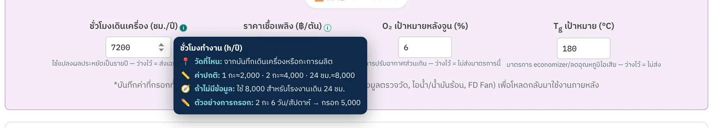
1
2
1
ปุ่ม ⓘ ข้างชื่อช่อง
2
กล่องช่วยเหลือ: วัดที่ไหน · ค่าปกติ · ถ้าไม่มีข้อมูลใช้ค่าอะไร · ตัวอย่างการกรอก
ตัวอย่างชั่วโมงทำงาน: 1 กะ ≈ 2,000 · 2 กะ ≈ 4,000 · 24 ชม. ≈ 8,000 ชม./ปี
ไม่มีข้อมูล → ใช้ 8,000 สำหรับโรงงานเดิน 24 ชม.
ข้อผิดพลาดที่พบบ่อย
คู่มือใช้งาน · โปรแกรมคำนวณประสิทธิภาพหม้อไอน้ำ (Boiler Efficiency Calculator) · ระดับ Free
23 / 26
✗ กรอกความดันเป็น bar a
✓ ช่องนี้รับ bar g อ่านจากเกจได้เลย โปรแกรมบวก 1.013 ให้เอง
✗ กรอกเชื้อเพลิงเป็น ตัน/ชม.
✓ ช่องนี้หน่วย kg/h — 3 ตัน/ชม. ต้องกรอก 3000
✗ วัด Tg กับ O₂ คนละจุด
✓ ต้องวัดจุดเดียวกัน หลังอุปกรณ์แลกเปลี่ยนความร้อนตัวสุดท้าย (โหมดอุ่นอากาศ: ก่อนเข้า air preheater)
✗ สัดส่วนเชื้อเพลิงไม่ครบ 100 %
✓ ดู Total สีเขียวใต้ตารางเชื้อเพลิง ต้องเป็น 100 %
✗ เลือกความชื้นไม้ไม่ตรง
✓ ความชื้นมีผลมากที่สุด — 40 % กับ 28 % ทำให้ประสิทธิภาพต่างกันเกิน 4 จุด
✗ แก้ค่าแล้วไม่กดคำนวณ
✓ กด Calculate Analysis ทุกครั้ง ก่อนอ่านหรือจดผล
✗ CO สูงเกิน 400 ppm
✓ แปลว่าเผาไหม้ไม่สมบูรณ์ — แจ้งหัวหน้าให้ตรวจหัวเผา/ลม ก่อนสรุปผล
✗ จดค่าคนละช่วงเวลา
✓ ไอเสีย ไอน้ำ และเชื้อเพลิงต้องเป็นช่วงโหลดเดียวกัน
แบบฝึกหัด: โรงงาน B หม้อไอน้ำเผาน้ำมันเตา
คู่มือใช้งาน · โปรแกรมคำนวณประสิทธิภาพหม้อไอน้ำ (Boiler Efficiency Calculator) · ระดับ Free
24 / 26
| ข้อมูล | ค่าที่วัดได้ |
|---|---|
| เชื้อเพลิง (Liquid) | 25. Heavy FO (น้ำมันเตา) 100 % |
| อุณหภูมิอากาศ Ta | 33 °C |
| อุณหภูมิไอเสีย Tg | 235 °C |
| O₂ / CO | 4.5 % / 60 ppm |
| สูญเสียทางผนัง | 1.0 % |
| อัตราป้อนเชื้อเพลิง | 345 kg/h |
| ไอน้ำ (ไออิ่มตัว) | 5 ton/h · 8 bar g |
| อุณหภูมิน้ำป้อน | 85 °C |
คำถาม — กรอกแล้วตอบ
1
ประสิทธิภาพวิธีอ้อม ASME (HHV) = ______ %
2
ประสิทธิภาพวิธีตรง (HHV) = ______ %
3
ความสูญเสียตัวไหนมากที่สุด?
4
ทำไมความสูญเสียความชื้นต่ำกว่าโรงงาน A มาก?
💡 เคล็ดลับ
ไม่ต้องติ๊ก Tramp Air · กรอกเสร็จกด Calculate Analysis แล้วเทียบเฉลยสไลด์ถัดไป
เฉลยแบบฝึกหัด โรงงาน B
คู่มือใช้งาน · โปรแกรมคำนวณประสิทธิภาพหม้อไอน้ำ (Boiler Efficiency Calculator) · ระดับ Free
25 / 26
1) Indirect (HHV): ASME 83.97% · BS 84.01% · JIS 83.96%
2) Direct (HHV) = 82.14% — ใกล้กับ Indirect แปลว่าค่าเชื้อเพลิงน่าเชื่อถือ
3) สูญเสียไอเสียแห้งมากสุด = 8.39% (Tg 235 °C ค่อนข้างสูง → พิจารณา Economizer)
4) ความชื้น 6.61% เพราะน้ำมันเตาแทบไม่มีน้ำ — ไอน้ำในไอเสียมาจากไฮโดรเจนในเชื้อเพลิงเท่านั้น
✓ ผ่าน
ได้ตัวเลขตรงกัน (±0.01) = ใช้เครื่องมือเป็นแล้ว
สรุป 1 หน้า (พิมพ์ติดไว้ข้างคอมพิวเตอร์)
คู่มือใช้งาน · โปรแกรมคำนวณประสิทธิภาพหม้อไอน้ำ (Boiler Efficiency Calculator) · ระดับ Free
26 / 26
1
เลือกอุปกรณ์ + ติ๊กมาตรฐาน
หม้อไอน้ำ · ASME/BS/JIS
2
เลือกเชื้อเพลิง
กลุ่ม → ชนิด → 100 %
3
ไอเสีย
Ta · Tg · O₂ (แห้ง) · CO
4
เชื้อเพลิง/ผนัง
kg/h · ผนัง %
5
ไอน้ำ
ton/h · bar g · น้ำป้อน °C
6
พัดลม FD
m³/h · RH % (ถ้ามี)
7
กด Calculate Analysis
ทุกครั้งที่แก้ค่า
8
อ่านผล + บันทึก .json
รายงานใช้ HHV + ชื่อมาตรฐาน
อ่านผลแล้วตรวจ
☐
Direct กับ Indirect ห่างกันมาก → ตรวจค่าเชื้อเพลิง
☐
CO > 400 ppm → เผาไหม้ไม่สมบูรณ์
☐
ความชื้นสูญเสียสูง → ลดความชื้นเชื้อเพลิง
☐
Tg สูง → พิจารณา Economizer
อ.หนึ่ง กลับทวี / Aj. Nueng Klubtavee
tripleeenergytools.com
tripleeenergytools.com